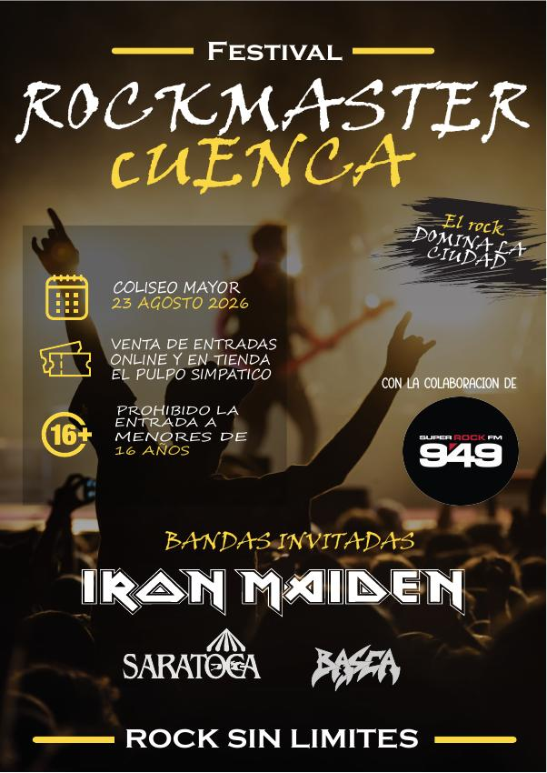
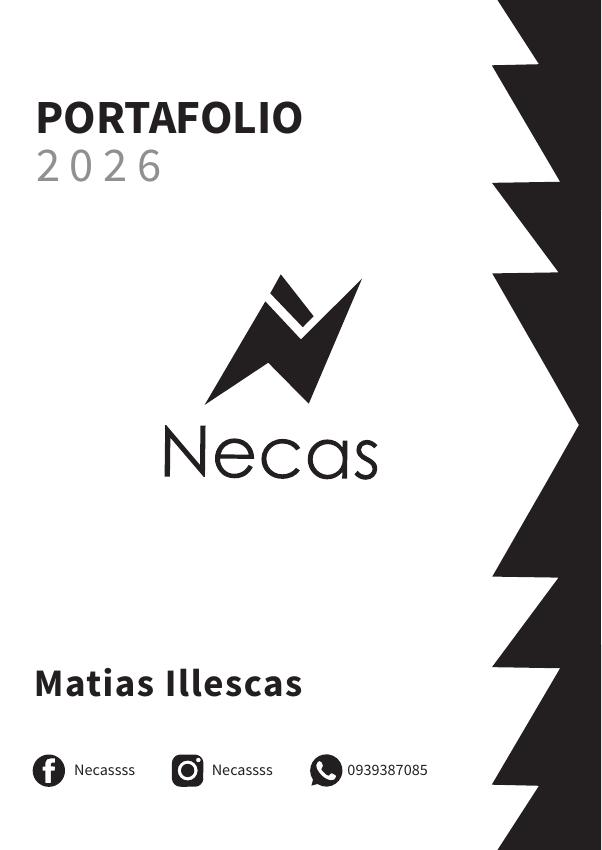

Portafolio de Matías Illescas
ñecas 11
Estudio Diseño y Multimedia en Cuenca. Juego básquet, y para esta galería cambié el cuaderno de bocetos por una pizarra de cancha.
Mis proyectos

Afiche de festival · 1 páginaRockmaster CuencaVer fichaCerrar ficha
Para este afiche reuní las bandas, la fecha y el precio del festival en una sola pieza. El negro y el dorado le dan el tono de un concierto de rock, y los distintos tamaños de letra ayudan a encontrar rápido la información.
Abrir Rockmaster Cuenca en PDF ↗ Diseño de interfaz · 3 páginasComalliVer fichaCerrar ficha
Diseño de interfaz · 3 páginasComalliVer fichaCerrar ficha
En Comalli trabajé la identidad visual de una interfaz de comida. Partí de los tonos de los ingredientes y los llevé a los botones, los íconos y las ilustraciones para que todo se sienta parte del mismo lugar.
Abrir Comalli en PDF ↗ PDF interactivo · 3 páginasMiguel ÁngelVer fichaCerrar ficha
PDF interactivo · 3 páginasMiguel ÁngelVer fichaCerrar ficha
Diseñé una entrada al mundo de Miguel Ángel mezclando pintura, escultura y tipografía. El botón de inicio convierte la portada en el primer paso de un recorrido por el documento.
Abrir Miguel Ángel en PDF ↗
Portafolio personal · 16 páginasPortafolio 2026Ver fichaCerrar ficha
Aquí junté una selección de mis trabajos de Diseño y Multimedia. Elegí una portada en blanco y negro con mi firma Necas para presentar las piezas bajo una misma identidad.
Abrir Portafolio 2026 en PDF ↗